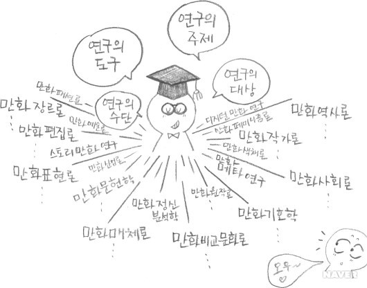

오늘날 단순한 오락물로 취급받던 만화는 다양한 연구방법론을 갖고 하나의 학문으로서 계보성과 이론을 정립해 나가고 있다. 연구의 도구, 연구의 주제로서의 만화 연구와 연구의 대상으로서의 만화 연구, 그리고, 만화에 그려진 기호체계, 내용, 그것이 창출해내는 메시지, 광범위한 사회 및 문화와의 관계, 예술적인 기능 등 여러 측면에서 만화 연구가 활발히 이루어지고 있다.
만화는 1970년 이후 미디어로서 위치를 확립하고 다양한 평론의 대상이 되어왔지만, 그 고유한 특성으로 유일한 학문적 방법론을 제시하는 데 어려움이 있다. 예전에 복잡한 사회현상 등을 분석하고 해명하는 방법으로서 컬처 스터디(culture study)라고 하는 접근방법이 소개되었다. 만화학은 다른 어느 학문보다 컬처 스터디의 방법론이 적합한 분야이다. 어느 작품이든지 배경을 이루는 사회, 사상, 풍속 등을 담고 있으며, 그 사회와 문화에 미치는 영향력을 지니므로 컬처 스터디 방법론을 통해 다양한 연구방법론을 고안해 낼 수 있다고 생각한다.
또한, 만화는 연령과 성별, 취향에 따라 구분되므로, 각 구분에 따라 만화에 그려진 요소들은 하나의 문화적 코드로서의 기능을 하고 있다. 만화에 그려진 캐릭터의 모습들은 그 배경을 이루는 세계의 문화적 약속들과 관련성이 있어 그 배경이 되는 사회적 상황, 정치적, 경제적, 문화적 영향 등을 담고 있고 그 스타일을 보면 그 작품이 게재되고 있는 미디어가 어떠한 시대정신을 담고 있는지 알 수 있다.
만화연구에는 많은 영역에서 방법론과 분절화의 시스템을 채용해야 하며 광범위한 지식세계에 대한 호기심이 필요하다. 만화연구 사례를 몇 가지만 언급해보면 다음과 같다. 우선, 만화사회문화 현상을 다룬 사회학적 고찰로 만화사회학, 만화패션론, 만화미디어론 등을 언급할 수 있으며, 만화 문화론적 고찰로는 만화대중문화론, 만화비교문화론, 만화아동문화론 등을 들 수 있다. 만화비교문화 연구방법으로는 시각문화의 전통과 변화를 고찰하고 만화의 제도적 환경을 관찰하는 방법을 생각할 수 있다. 다음으로, 만화매체에 대한 연구로는 만화표현론, 만화언어론, 만화편집론, 만화원작자론, 만화독자론 등이 있다. 만화언어 연구의 경우, 표현의 모든 요소를 계층화하고 종합하여 규칙을 발견하고 거기에 따라 만화언어의 규칙성을 기술하는 것이 중요하다.
작품의 기호론적, 의미론적 분석으로는 만화비평론, 만화정신분석학 등을 생각해 볼 수 있으며, 만화라는 매체 이용을 통한 역할론으로는 만화비즈니스론, 만화교재론, 만화치료론 등을 생각할 수 있다. 또한, 만화개별 장르에 대한 연구로 소녀만화론, 4컷 만화 연구, 스토리만화 연구 등이 있고, 메타작품 연구(만화작품, 작가에 대해 논하는 것)에 대해서는 만화문헌학, 만화연보론, 만화 원작자론, 만화 편집론 등을 거론할 수 있다. 만화문헌 연구의 경우, 과거의 시간 축에 자료를 어떻게 위치시킬까에 대한 고민이 필요하며 현대 시공간에 있어서 무엇을 말하고자 하는가를 밝히는 것을 목적으로 한다. 예술적인 관점에서의 만화 연구는 만화조형론, 만화색채론, 만화예술론 등의 주제로 연구를 발전시킬 수 있다. 이외에도 만화를 다양한 연구 분야와 접목시켜 연구대상으로 발전시킬 수 있는 무한한 가능성을 지닌다.
